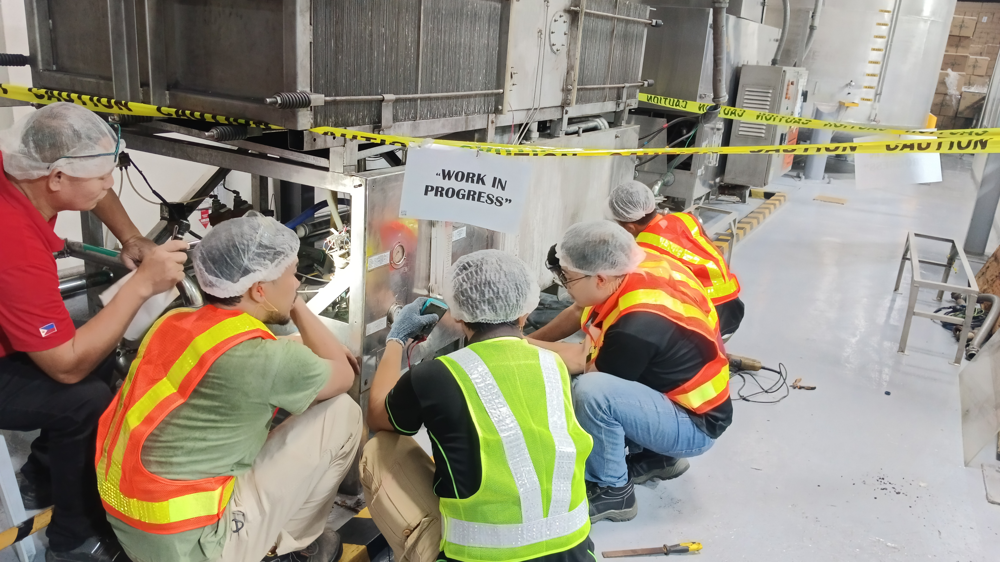

Legacy PLC Migration & Control Panel Rehabilitation for a Food & Beverage Processing Facility

Watchdog Automation successfully executed a complete automation modernization project for a major Food & Beverage distillation facility, replacing a legacy control platform with a high-performance Siemens automation architecture. The project addressed the challenges of obsolete hardware, limited system support, and aging control infrastructure, ensuring long-term operational reliability and improved plant performance.
The existing automation system was built on the Allen-Bradley SLC500 platform, which had reached obsolescence and posed increasing risks related to spare parts availability, system downtime, and maintenance limitations. Our engineering team carried out a full migration of the control system to the Siemens SIMATIC S7-1500 platform, providing a modern, scalable, and future-ready automation solution.
A major part of the project involved reverse engineering and software migration. The original RSLogix 500 program was carefully analyzed, re-structured, and converted into Siemens TIA Portal V20, ensuring that all process logic, interlocks, and safety conditions were accurately replicated while taking advantage of the advanced capabilities of the new platform.
This project demonstrates Watchdog Automation's capability to perform complex cross-platform PLC migrations, modernize legacy industrial systems, and deliver fully engineered control solutions aligned with current automation standards.
The upgraded system now provides the distillery with: